Claude / Codex 每日技巧
每天一条可立即上手的小贴士，覆盖 Claude 与 Codex 的提示词、自动化、项目协作与文档生成，写给把 AI 用在日常工作里的产品经理。
今天 让 Claude 先「采访你」，再动手写 PRD
让 Claude 先「采访你」，再动手写 PRD
 让 Claude 直接生成「带公式、能用」的 Excel，而不是死表格
让 Claude 直接生成「带公式、能用」的 Excel，而不是死表格
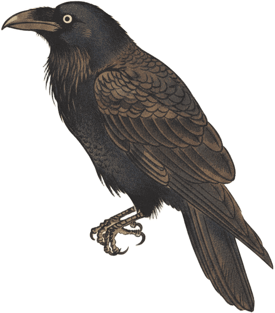
用 AGENTS.md 把项目规则写给 Codex，少来回解释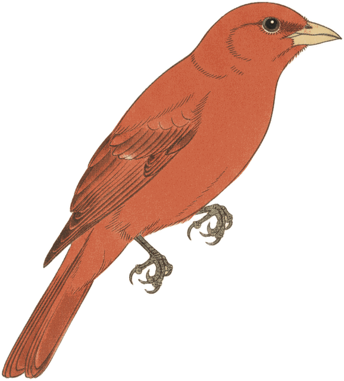
让 Claude 当「魔鬼代言人」，把方案的漏洞先挑出来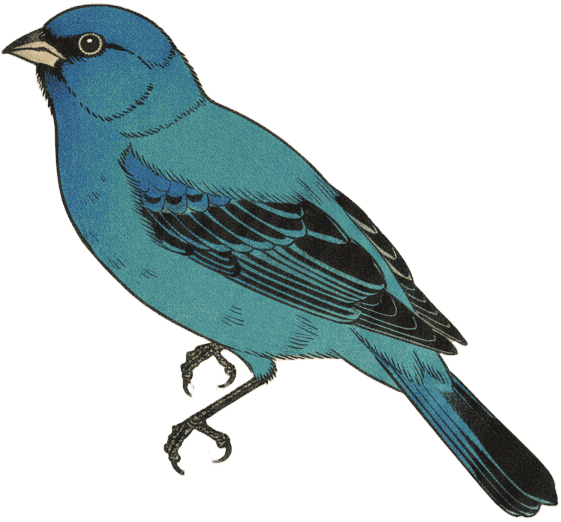
给 Claude 连上一个文件夹，让它就地读写你的整摞资料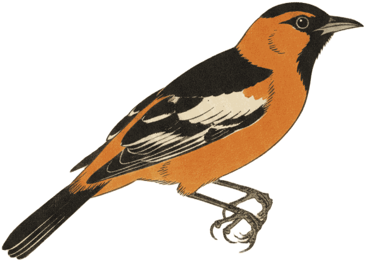
与其反复改格式，不如先甩给 Claude 三个范例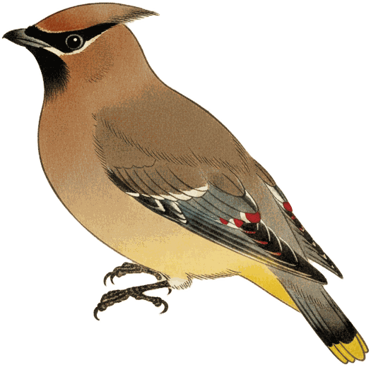
给你的产品建一个 Claude「Project」，从此不用每次重讲背景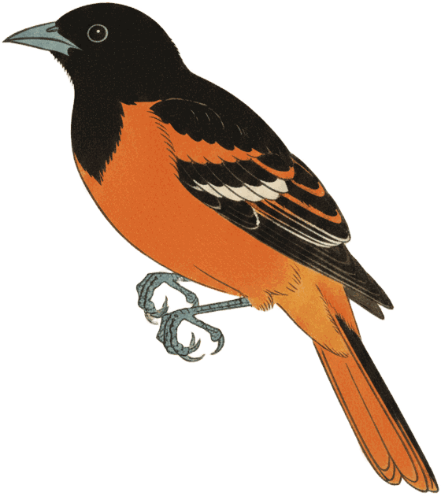
让 Claude 把 PRD / 调研结论一键做成汇报 PPT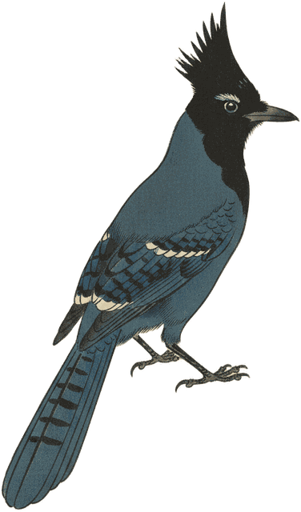
给 Claude 接上连接器，让它直接读你的 Asana / Notion让 Claude 先「采访你」，再动手写 PRD
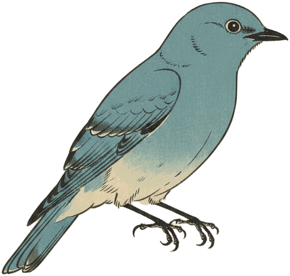
用「/schedule」定时任务，让竞品监控每周一自动送上门让 Claude 直接生成「带公式、能用」的 Excel，而不是死表格
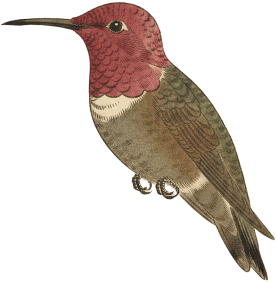
用 XML 标签把提示词拆成「积木」，输出更稳更准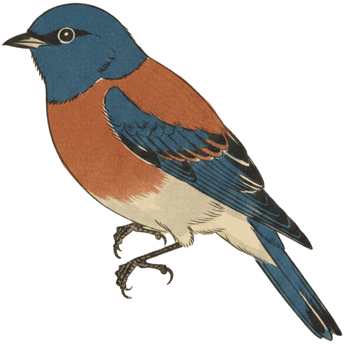
把一次性回答变成「实时 Artifact 看板」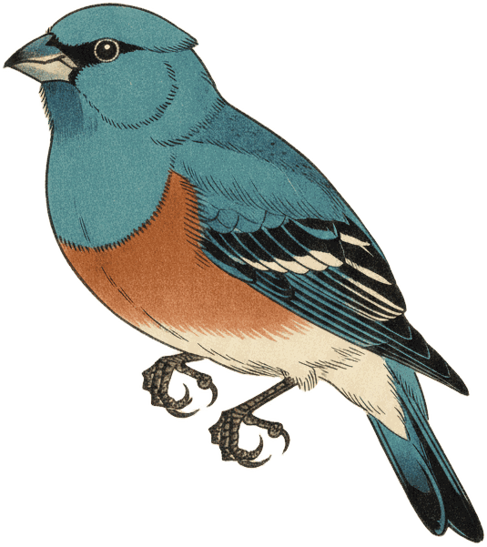
用 Skills 把“写 PRD”变成一键流程该分类下暂无技巧。